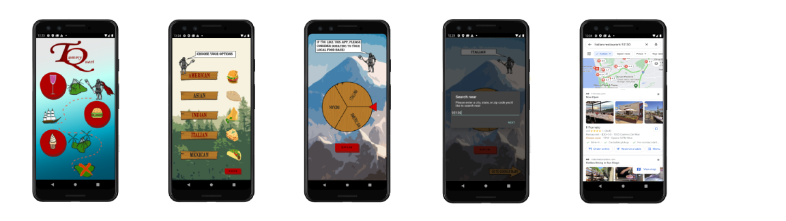
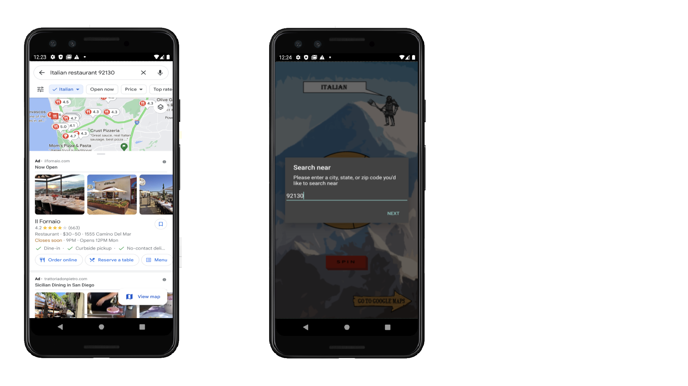

Tummy Quest
What is Tummy Quest?
Tummy Quest is an app that utilizes a “wheel of fortune” spinner that allows the user to decide what to eat from a variety of cuisines and food types. The user would first select between drinks, food, and dessert before being presented with several, more specific options for the app to randomly select from. This application was a personal project during the COVID-19 lockdown to apply my prior knowledge of Java and to learn how to use HTML. With the help of my cousins and other family members, I was able to program Tummy Quest from scratch and publish the app on Google Play by early July.
Development Process
Tummy Quest was created using Android Studio. The most critical part of the app was the spinning wheel.The most critical part of the app was the spinning wheel. The animation to spin the image of the wheel was an existing feature in Android Studio. However, I had to conduct research to find the equation that would determine the angle on which the wheel would land upon. In addition, coupling each combination of selected options with its distinct wheel was another important aspect of the app. To implement this function, I used a binary system in which each selection held different exponents of ten. The sum of the value of the selections correlated to a unique wheel. Aside from my assistance in developing Tummy Quest, I was also responsible for all of the visual elements of the app. A total of 140 visual elements, which includes 48 unique wheels, were designed in Adobe Illustrator. To insert my designs into the app, I self learned HTML to develop the frontend of the app.
